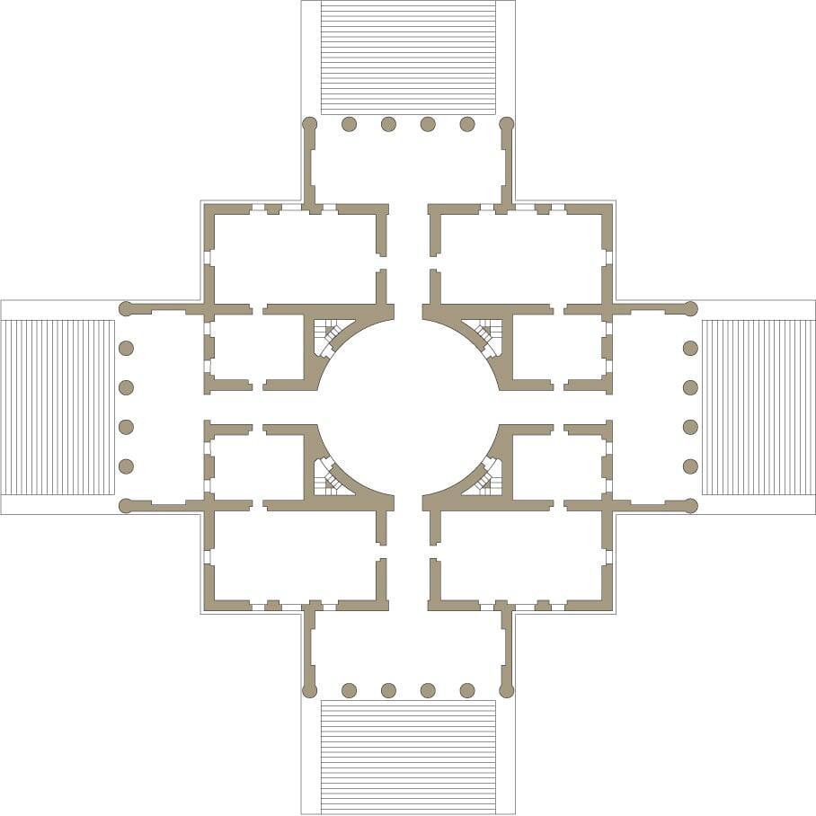
La pianta è il primo dispositivo critico della composizione. Non registra una disposizione, ma verifica relazioni: proporzioni, simmetrie, gerarchie, vuoti dominanti. Funziona come strumento logico e spaziale insieme: se la pianta regge, il progetto può cominciare a esistere come sistema.
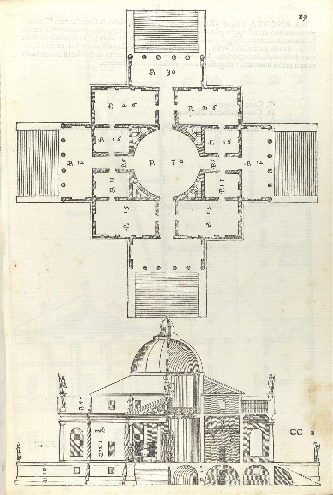
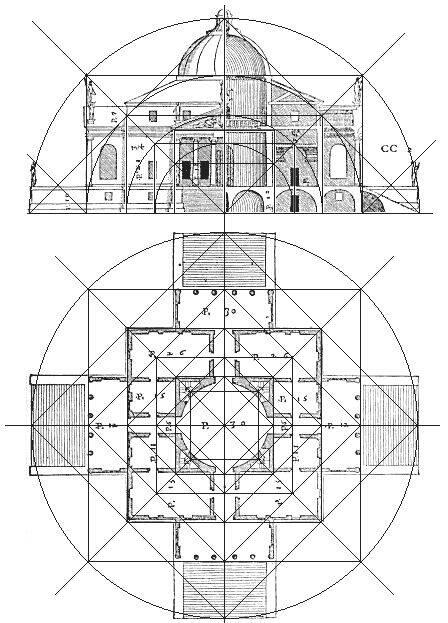
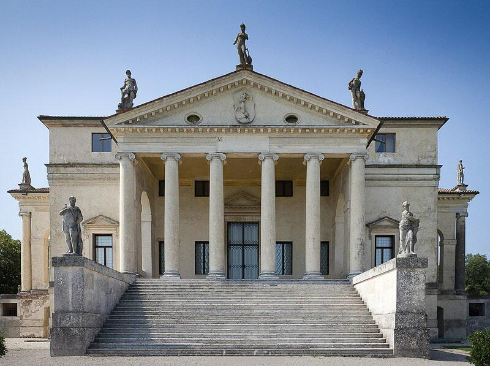
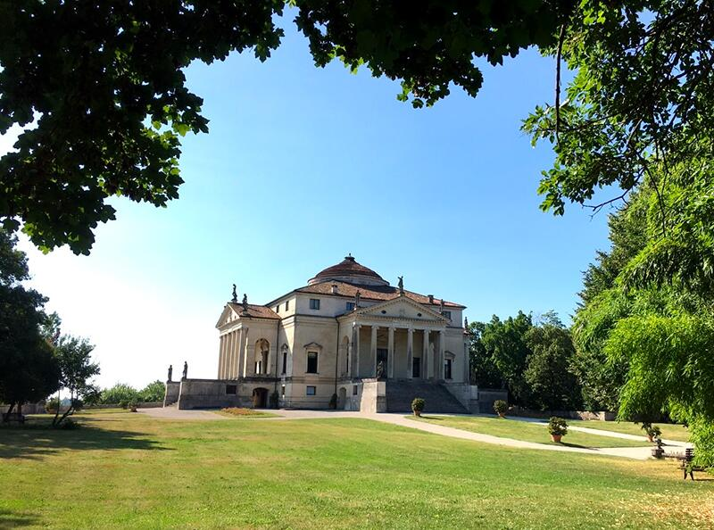
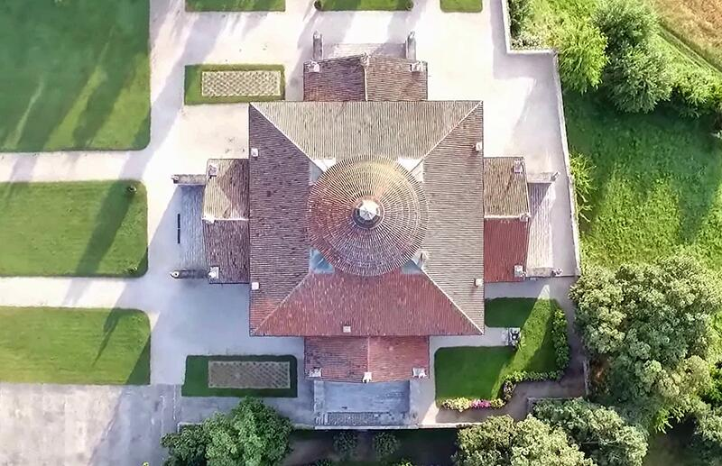
La Villa Rotonda è uno dei casi più esemplari, nella storia dell’architettura occidentale, di come la pianta sia il luogo in cui l’edificio prende forma in senso critico, prima ancora che volumetrico o figurativo. Palladio non usa la pianta come semplice rappresentazione dell’oggetto, ma come strumento matematico, come campo in cui verificare rapporti, simmetrie, pesi e proporzioni che devono garantire la stabilità concettuale dell’opera.
La pianta della Villa Rotonda nasce dall’intersezione tra due sistemi:
Per questo la pianta della Rotonda è didatticamente preziosa: mostra come la forma non possa essere immaginata senza essere prima verificata. Il prestigio volumetrico dell’edificio — i quattro portici, la cupola, la perfetta centralità — è in realtà l’esito di un lavoro invisibile, fatto di prove proporzionali, pesi, moduli e allineamenti che emergono solo nella pianta.
Palladio ci mostra che la coerenza architettonica è un fatto di rapporti, non di immagine: la pianta non “illustra” la Rotonda, la costruisce.
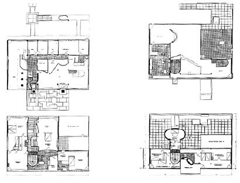
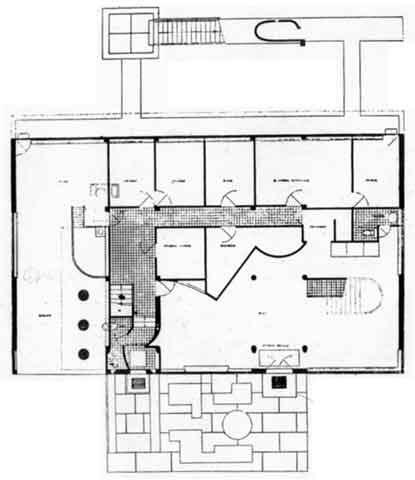
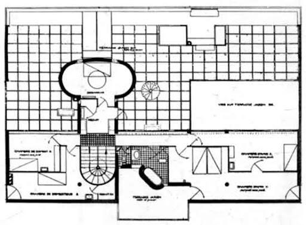
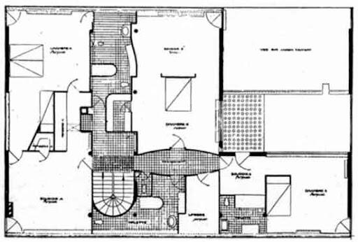
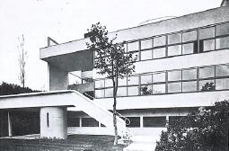
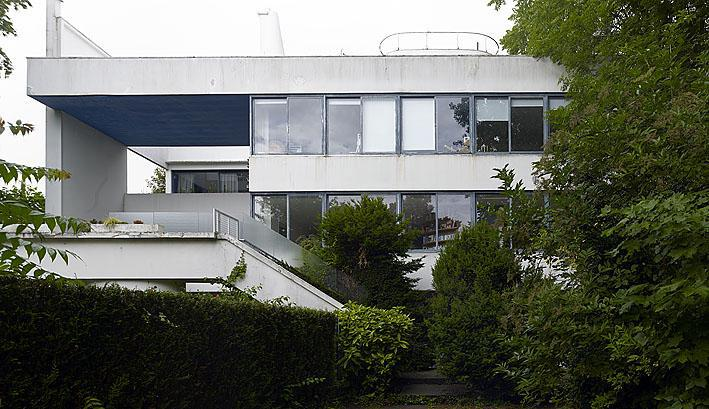
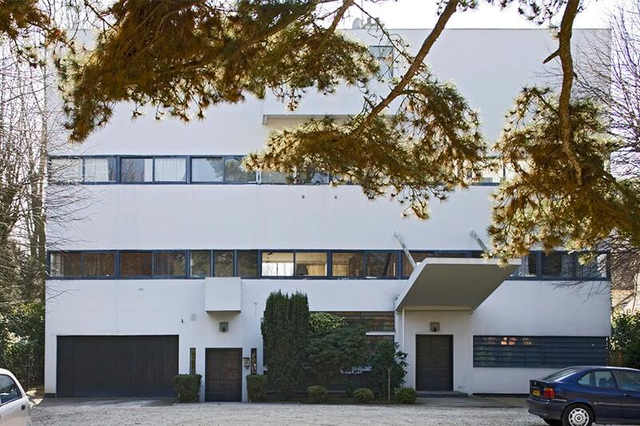
La pianta come campo regolato
Nella Villa Stein la pianta diventa il vero luogo di costruzione dell’architettura: non uno schema distributivo, ma un dispositivo critico che permette di verificare l’equilibrio di un organismo estremamente allungato. Le Corbusier utilizza la pianta per misurare rapporti, pesi, proporzioni e allineamenti, assicurandosi che il campo moderno — apparentemente libero — mantenga una coerenza interna rigorosa.
La pianta rivela un sistema proporzionale preciso, basato su rapporti numerici e geometrici che anticipano il Modulor: sequenze, allineamenti, variazioni calibrate di profondità. La struttura non è un dato tecnico aggiunto, ma un elemento che la pianta deve continuamente testare: i setti portanti, le fasce strutturali e i pieni laterali bilanciano il corpo edilizio per evitare che la lunghezza lo renda instabile sul piano spaziale.
Allo stesso tempo, la pianta organizza il percorso come parte integrante della logica del campo: la rampa centrale, le soglie e le aperture non sono elementi funzionali, ma fattori di equilibrio che distribuiscono pesi e gerarchie. È nella pianta che si vede come il movimento concorra alla tenuta dell’intero sistema.
Villa Stein mostra in modo esemplare che la modernità non nasce da una libertà formale, ma dalla verifica dei rapporti interni: proporzioni, spessori, assi e movimenti devono reggere insieme, altrimenti la forma non funziona. La pianta, qui, non rappresenta l’edificio: lo mette alla prova.
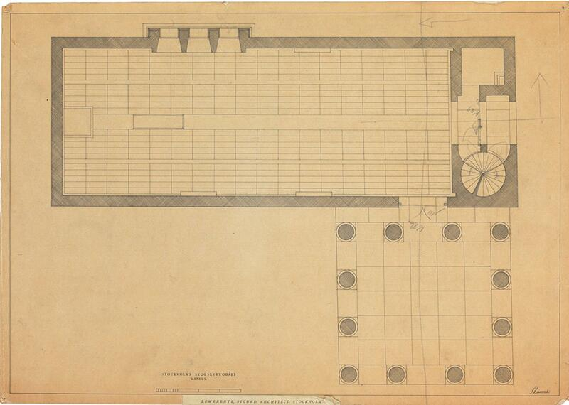
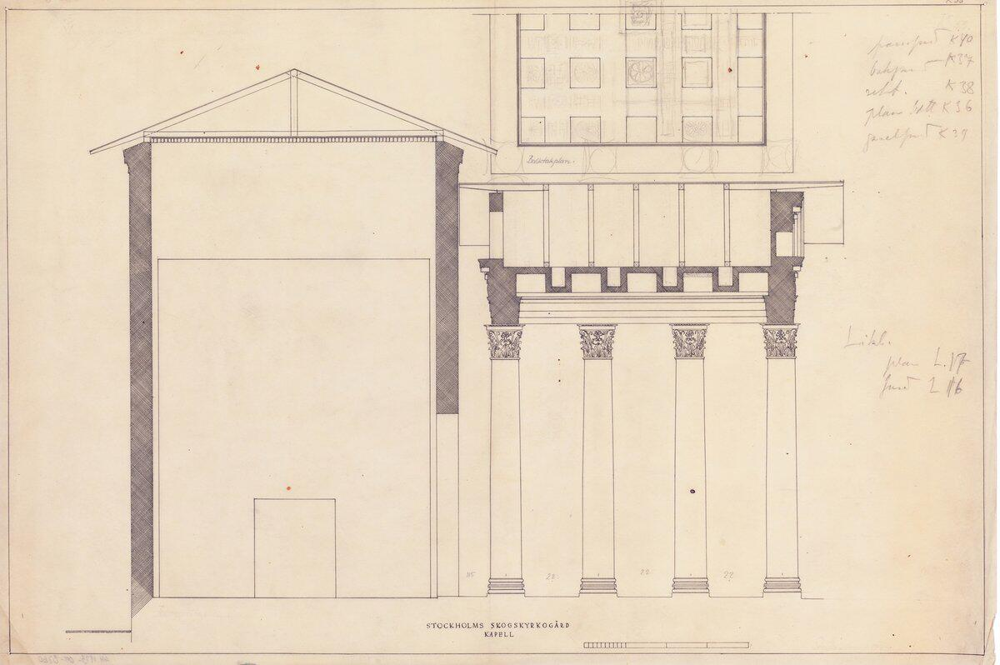
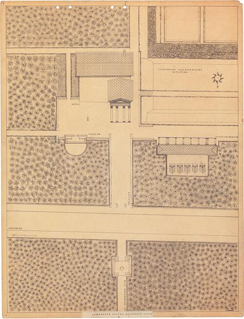
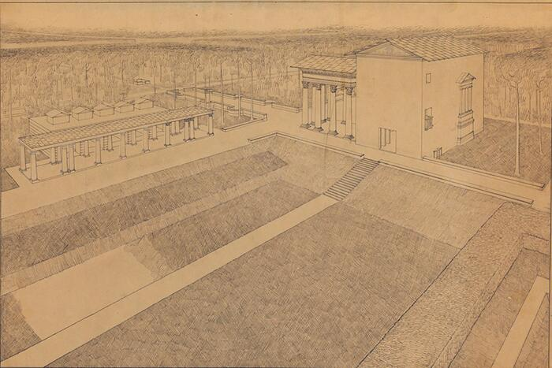
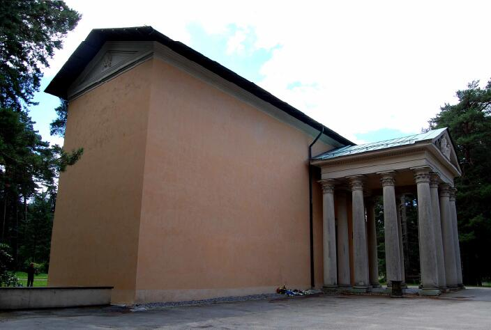
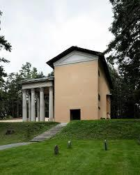
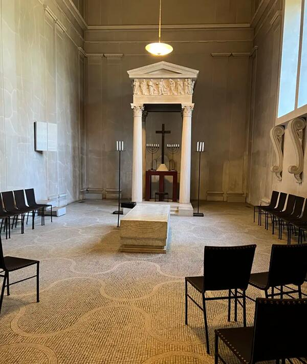
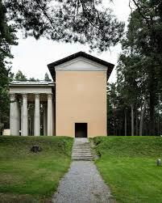
La pianta come misura del silenzio e dell’equilibrio
Nella Cappella della Resurrezione la pianta non è uno schema distributivo, ma un dispositivo di verifica attraverso cui Lewerentz costruisce l’equilibrio interno dell’architettura. Sebbene il corpus grafico conservato mostri soprattutto studi di dettagli, la pianta unica è già sufficiente per capire come l’autore misuri con precisione pesi, rapporti e proporzioni che definiscono il carattere dell’edificio.
Lewerentz non cerca simmetrie apparenti né composizioni scenografiche: ciò che interessa è la tensione controllata tra navata, percorsi, cappelle laterali e abside. Ogni spessore murario, ogni scarto di allineamento, ogni variazione nella profondità degli ingressi partecipa alla costruzione di un campo spaziale intensamente calibrato. La pianta diventa così il luogo in cui l’architetto verifica che l’architettura regga non per effetto formale, ma per equilibrio interno.
Questo lavoro di misura si ritrova anche negli altri disegni — sezioni, prospetti, dettagli — dove il silenzio materico della cappella è messo alla prova attraverso micro‐aggiustamenti, variazioni della luce, definizione delle soglie. Lewerentz progetta come se ogni relazione dovesse essere verificata una per una: non un linguaggio, ma un edificio che “trova” la sua forma attraverso la precisione del disegno.
Per questo la Cappella della Resurrezione è esemplare nella Lezione 5: mostra che l’architettura non nasce da un’immagine complessiva, ma da una pianta che mette alla prova l’idea, pesandone le proporzioni e individuando la distanza esatta tra le parti. La pianta di Lewerentz non rappresenta l’edificio: lo rende possibile.